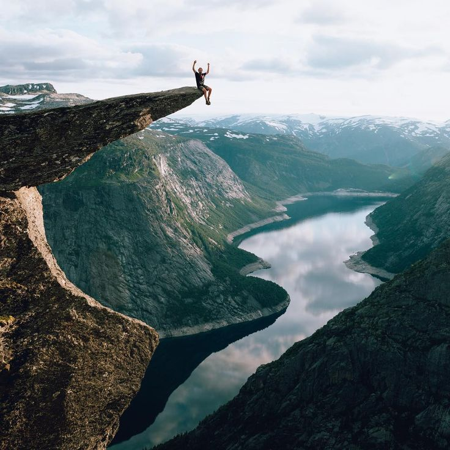

For the keen hiker, there is a plethora of opportunities awaiting in Sri Lanka 's diverse
and luscious hill country.
The beautiful area of Haputale and Diyatalawa, located in the hill country of Sri Lanka , provides
a base from which to try out a wide variety of hiking and trekking tours through jungle, across
tea estates and up mountains.
The river and numerous waterfalls in Sri Lanka are another key attraction that allows hikers and
trekkers to enjoy a refreshing dip en-route !
In the same area the Horton Plains National Park offers some excellent hikes in an
unusual environment, characterised by forest patches, grasslands and some high-altitude vegetation.
Highlights include the dramatic 880 metre drop at World's End and the beautiful Baker's Falls.
When climbing the infamous Adam’s Peak Wilderness Sanctuary, its best to begin your ascent at
night in order to arrive at the top in time for a magical sunrise when the mystical shadow of
the peak is perfectly cast across the clouds.
It is one of those truly unique moments that will live on in your memory long after the
aches and pains from the hiking have gone!
The attractive area of Bandarawela, in Sri Lanka's mountainous terrain and the nearby
town of Ella are renowned for their many walks, including Little Adam's Peak, Ella Rock and the Namunukula Mountain Range.
If you're in the Kandy vicinity, don't miss out on exploring the beautiful
Knuckles Mountain Range. The region stretches an impressive 155 sq km, with
five major forest formations, a wide variety of rare and endemic flora and fauna and
some breathtaking mountain scenery. It is a real paradise for hikers, offering numerous
trails that journey across clear rivers, through dense forests, past flowing waterfalls and
lush tea plantations, and alongside terraced paddy fields and colourful Kandyan home gardens.
A hiking tour in Sri Lanka wouldn't be complete without a visit to the fascinating Sinharaja
Rain Forest where a variety of trails can be tailor-made to meet the specific interests/fitness
levels of the group.